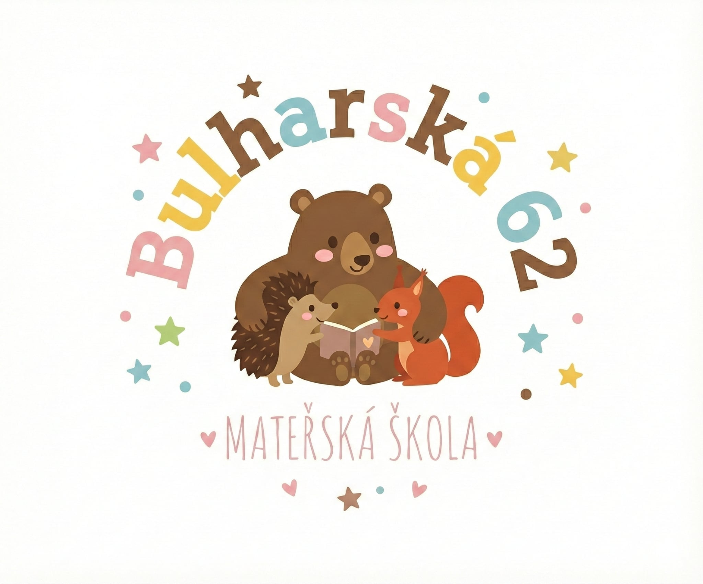

| Název školy | Mateřská škola Brno, Bulharská 62, příspěvková organizace |
|---|---|
| Sídlo školy | Bulharská 62, Brno - Královo pole, 612 00 |
| Kontakty | e-mail: msbulharska@gmail.com tel: 739 373 717 web školy: www.ms-bulharska.cz ID datové schránky: kp56f3s |
| IČO | 64328244 |
| Číslo jednací | |
| Ředitelka školy a osoba odpovědná za tvorbu ŠVP | Bc. Pavla Kukletová |
| Zpracovatelé ŠVP | kolektiv pedagogických pracovníků školy |
| Údaje o zřizovateli | Název: Statutární město Brno, Městská část Brno-Královo Pole Adresa: Úřad městské části města Brna, Brno – Královo Pole, Palackého tř. 1365/59, 612 93 Brno Kontakty: e-mail: podatelna@krpole.brno.cz, tel: +420 541 588 111, web: www.kralovopole.brno.cz, ID DS: xyxbwjb IČO/DIČ: 44992785 / CZ44992785 |
| Platnost a účinnost dokumentu | Platnost dokumentu od 1. 9. 2026 do 1. 9. 2029. Dokument je pravidelně každý rok aktualizován na základě výsledků autoevaluace. |
| Schválení dokumentu | Dokument schválila pedagogická rada dne 24. 8. 2026. |
Brno-Královo Pole je městská část na severu statutárního města Brna. Samosprávná městská část vznikla 24. listopadu 1990. Žije zde přes 28 000 obyvatel. Městská část Brno-Královo Pole má výrazně městský charakter, ale na severovýchodě městské části v katastrálním území Sadová se rozkládají rozsáhlé lesy a nachází se zde významný krajinný prvek Údolí Zaječího potoka. Na severozápad městské části zasahuje přírodní památka Medlánecké kopce s lesoparkem Palackého vrchu.
Samostatně stojící budova mateřské školy postavená v 80. letech 20. století se nachází uprostřed rozlehlé školní zahrady, v zástavbě rodinných domů. Budova prošla postupnou rekonstrukcí. Proběhla výměna oken a zateplení pláště budovy, při vnitřní rekonstrukci probíhající od roku 2020 se probouráním příček zprůchodnily vstupy do šaten dětí interiérem budovy. Všechny třídy a šatny dětí jsou vybaveny nábytkem na míru navrženým interiérovým architektem. Nový kabát v podobě obložení stěn a nového povrchu schodů z linolea dostaly i obě schodiště ke dvěma třídám v patře. Na okna byly v roce 2024 nainstalovány venkovní žaluzie. Prostředí mateřské školy se tak pro děti stalo příjemnějším, bezpečnějším a podnětnějším.
Budova mateřské školy je dvoupodlažní a není bezbariérová. Dvě třídy se nachází v patře. Budova je hodně prosklená a její podlahová plocha a objem vzduchu odpovídá příslušným předpisům a prostorové podmínky budovy tedy splňují požadavky pro vzdělávání celkem 72 dětí.
Mateřská škola má vlastní školní kuchyni se svým vstupem, jenž zároveň slouží jako vstup pro personál do budovy a pro zásobování kuchyně. V přízemí školy se nachází třída Veverek, ředitelna, kancelář vedoucí školní jídelny, školní kuchyně, sklady a zázemí personálu kuchyně. V prvním nadzemním podlaží budovy jsou umístěny dvě dispozičně zrcadlově obrácené třídy, třída Ježečků a třída Medvídků, knihovna a místnost pro individuální činnost.
Budova stojí uprostřed poměrně velké školní zahrady. Nachází se zde tři pískoviště a herní prvky sloužící k rozvoji pohybových dovedností dětí. V roce 2024 bylo na zahradě vybudováno mlhoviště a brouzdaliště k osvěžení dětí v horkých dnech. K dodržování pitného režimu byly na zahradu pořízeny dvě pítka pro děti. Třída Veverek má u budovy nainstalované krmítko pro ptáky a každá třída má na zahradě svůj pěstební vyvýšený záhon k podpoře environmentální výchovy. Nejvyšší povolený počet dětí: 72 dětí.
Každá ze tří tříd má vlastní vchod do šatny pro děti, sociální zázemí, výdejnu stravy a šatnu pro zaměstnance. Všechny třídy disponují herní, jídelní a pracovní částí. Herní část je využívaná nejen k realizaci tělovýchovných aktivit, ale také jako část odpočinková, po obědě zde děti mají rozložená lůžka. Jídelní část je také využívána pro individuální a skupinovou práci s dětmi.
Třídy se liší pouze laděním vybavení tříd do jiné barevné škály, třída Veverek do zelené, třída Ježečků do žluté a oranžové a třída Medvídků do modré. K rozvoji dětí slouží řada edukativních pomůcek, didaktické hry a hračky. Všechny pomůcky a hračky jsou umístěny tak, aby byly pro děti dostupné a zároveň se obměňují a doplňují, aby dětem bylo zajištěno podnětné a obsahově bohaté prostředí a rozvíjeli se jejich kognitivní, motorické a kreativní schopnosti. Všechny tři třídy dětem poskytují útulné a bezpečné prostředí.
|
SILNÉ STRÁNKY
|
SLABÉ STRÁNKY
|
|
PŘÍLEŽITOSTI
|
HROZBY
|
Náš pedagogický tým tvoří stabilní a plně kvalifikovaný kolektiv, ve kterém působí ředitelka školy, její zástupkyně, 5 učitelek a 2 asistentky pedagoga. Celý náš tým se neustále vzdělává a profesně zdokonaluje, abychom dětem poskytovali tu nejlepší možnou péči a vzdělávání. Učíme se novým metodám, sledujeme moderní trendy a sdílíme mezi sebou příklady dobré praxe. Díky tomuto společnému nasazení dokážeme jako celek fungovat co nejefektivněji a neustále posouvat kvalitu naší mateřské školy kupředu.
Profesní rozvoj pedagogických pracovníků je realizován v souladu s individuálními potřebami jednotlivých zaměstnanců, které vycházejí z koncepčně zpracovaného plánu Dalšího vzdělávání pedagogických pracovníků (DVPP), který zpracovává ředitelka školy. Tento plán zohledňuje potřeby mateřské školy, aktuální trendy v oblasti vzdělávání a profesní cíle jednotlivých pedagogů a systematicky rozvíjí profesní kompetence pedagogů školy.
Záměry, které si škola stanovila na následující období:
Snahou všech zaměstnanců školy je vytvářet takové prostředí, aby se zde cítili spokojeně, jistě a bezpečně nejen děti, ale i zákonní zástupci a zaměstnanci. Zákonným zástupcům dětí je při nástupu do mateřské školy nabídnut adaptační režim, jehož délka závisí na sociální vyspělosti a individuálních potřebách dítěte, ale i na požadavcích zákonných zástupců. Pedagogové přistupují k individuálním potřebám dětí vstřícně a v rámci možností se jim snaží vyhovět.
Děti se podílí na vytváření pravidel chování ve skupině tak, aby se ve třídách postupně formoval kolektiv, kde se všichni cítí dobře, jsou k sobě zdvořilí a ohleduplní, navzájem se respektují, tolerují, ochraňují a pomáhají si. Pedagogové děti vedou citlivě, ale důsledně k dodržování těchto pravidel a svým chováním jdou dětem příkladem. Pedagogové dětem naslouchají a vedou s nimi podporující, vstřícnou a empatickou komunikaci, používají především formativní hodnocení a vyhýbají se paušálním pochvalám i odsudkům. Všechny děti mají rovnocenné postavení, tedy stejná práva, možnosti, ale i povinnosti. Jakékoliv projevy nerovností, podceňování a zesměšňování dětí jsou nepřípustné.
V maximální možné míře je uplatňován pedagogický styl s nabídkou, který počítá s aktivní spoluúčastí a samostatným rozhodováním dítěte, pokud to není situace, při níž je nutné, aby se dítě přizpůsobilo skupině. Vzdělávací nabídka odpovídá mentalitě a věku předškolního dítěte, je mu tematicky blízká, jemu pochopitelná, přiměřeně náročná, užitečná a prakticky využitelná, čímž u každého dítěte podporujeme důvěru samo v sebe a zdravé sebevědomí. Učíme dítě pracovat samostatně i ve skupině a umět poznat a pojmenovat svoje emoce a pracovat s nimi. Pokud dítě vyžaduje klid a soukromí, je mu k dispozici klidový koutek, tzv. hnízdečko.
Po dohodě s učitelkou, za jakých pravidel užívání a ukládání, si dítě může vzít do mateřské školy osobní předmět, který mu pomůže zajistit pocit bezpečí a jistoty. Hru chápeme jako respektovanou potřebu dítěte, ale i metodu vzdělávání.
Záměry, které si škola stanovila na následující období:
Před zápisem je pro zájemce o přijetí do mateřské školy pořádán den otevřených dveří. Mohou si prohlédnout prostory školy a zahrady a jsou jim zodpovězeny případné dotazy. Po nástupu do mateřské školy je v maximální možné míře umožněn adaptační režim, dle možností a přání zákonných zástupců, a především dle potřeb jejich dítěte. Učitelé se v tomto období u dítěte zaměří především na vytváření pocitu bezpečí a jistoty. Zákonní zástupci mohou vyplnit dotazník, kde specifikují potřeby svého dítěte.
V první polovině září je pořádána třídní schůzka pro všechny zákonné zástupce, kde jsou mimo jiné informováni o možnostech spolupráce se školskými poradenskými zařízeními. Zákonní zástupci se mohou aktivně zapojovat do dění v mateřské škole (ukázkou svého povolání nebo zájmové činnosti anebo předčítáním), účastnit se vzdělávání i různých programů školy a podílet se na plánování a spolurozhodování při vzdělávání jejich dítěte a na autoevaluaci školy.
Zákonní zástupci jsou učitelkou informováni o prospívání a pokrocích svého dítěte v rozvoji a učení minimálně 2x ročně při sjednaných konzultačních hodinách, v nichž mají zákonní zástupci možnost v klidu a soukromí s učitelkami pohovořit o vývoji svého dítěte. Smyslem těchto konzultací je předat rodičům aktuální informace o pokrocích ve vzdělávání jejich dítěte, při případných vzniklých obtížích najít společně řešení, společnou cestou podpořit maximální rozvoj jejich dítěte v rámci jeho individuality a zajistit tak dítěti co nejplynulejší přechod z mateřské školy do základní školy. V případě potřeby si mohou zákonní zástupci kdykoliv dohodnout schůzku mimo tyto hovorové hodiny s učitelkou nebo ředitelkou školy.
Všichni zaměstnanci školy zachovávají mlčenlivost a diskrétnost ohledně informací, které jim byly svěřeny, chrání soukromí rodiny a se zákonnými zástupci jednají taktně a ohleduplně a k jednotlivým rodinám přistupují s porozuměním a respektem.
Záměry, které si škola stanovila na následující období:
Mateřská škola má tři třídy: Veverky, Ježečky a Medvídky. V každé třídě je max. 24 dětí. Provoz v mateřské škole probíhá od 6:15 do 16:45 hod. Děti se schází ve třídě Veverek od 6:15 do 7:00 hod., poté se rozchází do kmenových tříd. V odpoledním provozu jsou děti sloučeny a rozchází se ze třídy Veverek nebo na školní zahradě.
Povinné předškolní vzdělávání probíhá denně od 8:00 do 12:00 hod. Nově přijatým dětem je umožněn adaptační režim.
Pravidelný režim dne a řád je nastaven tak, aby umožnil přizpůsobit průběh dne aktuálním potřebám, zájmům dětí a pružně reagovat na vzniklé podněty s ohledem na individuální potřeby dětí. Pro řízené i nepřímo řízené činnosti není vyhrazen pevný čas. Dětem je umožněno vybírat si z pestré nabídky spontánních i řízených činností, které vycházejí ze situací a zájmů dětí. Hra, spontánní činnost a nepřímo řízené činnosti převažují nad řízenou činností, protože hra a další činnosti bez přímého působení pedagoga jsou nepostradatelným prostředkem pro aktivní učení a zároveň příležitostí k pedagogickému diagnostikování. Ke hře a promyšlené vzdělávací nabídce využíváme nejen vnitřní prostory, ale v maximální možné míře i pobyt venku, ať už ve městě, volné přírodě nebo na zahradě mateřské školy.
V denním režimu je zařazena doba odpočinku po obědě. Její délka je sice individuální, ale protože pozitivně ovlivňuje růst, psychický rozvoj, zdraví, náladu i chování dětí, nelze ji vynechat.
Mateřská škola poskytuje podpůrná opatření dětem se speciálními vzdělávacími potřebami a dětem nadaným a spolupracuje s odborníky ze školských vzdělávacích zařízení případně s dalšími odborníky dle aktuálních speciálních vzdělávacích potřeb jednotlivých dětí. Zákonným zástupcům je nabízena každoročně možnost docházet s dítětem do Edukativně stimulační skupinky, kterou vedou 2 učitelky z mateřské školy. Dětem cizincům je v roce povinného předškolního vzdělávání poskytována jazyková podpora formou bezplatné jazykové přípravy 2 x 30 min.
Překrývání pedagogů při přímé pedagogické činnosti je v každé třídě zajištěno alespoň 2,5 hodiny denně. Pedagogové se v době přímé pedagogické činnosti věnují výchově a vzdělávání dětí a chovají se v souladu s obecně uznávanými společenskými normami. Dbáme na dodržování limitů počtu dětí ve třídách a jejich spojování omezujeme na nezbytné minimum.
Všichni zaměstnanci se snaží o zajištění bezpečného prostředí a chrání zdraví dětí. Naše mateřská škola se aktivně zapojuje do různých zajímavých projektů a environmentálních programů, které pestře obohacují naši vzdělávací nabídku. Mateřská škola organizuje pro zájemce akce, kde je účast zákonných zástupců vítána, např. Vánoční tvoření, Jarní tvoření s besídkou ke Dni matek a Zahradní slavnost se stužkováním dětí odcházejících do základní školy. Během roku také pořádáme akce určené primárně dětem: pravidelně jezdíme na školy v přírodě, organizujeme předplavecký výcvik (plavání), školní celodenní výlety, karnevaly, návštěvy divadla a divadelní představení v mateřské škole. Spolupracujeme rovněž s externími lektory a organizacemi, které nabízejí další obohacující aktivity.
Záměry, které si škola stanovila na následující období:
Všichni zaměstnanci mateřské školy v denním režimu respektují individuální potřeby dětí k aktivitě, k odpočinku a při stravování. Děti mohou k relaxaci využít ve všech třídách klidný kout, tzv. hnízdečko. Dětem s nižší potřebou spánku po obědovém odpočinku jsou nabízeny klidové činnosti. Nucení dětí do spánku nebo dlouhého ležení je nepřípustné.
Dětem je nabízena pestrá a vyvážená strava. Pedagog hledá způsoby, které děti podpoří v chuti k jídlu, ale zásadně dítě do jídla nenutí a dodržuje u dítěte možnost rozhodnout se, co sní. Podmínky stravování poskytují dětem samostatnost při stolování a jsou podporovány v kultuře stolování a dodržování slušného chování. Po celý čas provozu škola zajišťuje pitný režim nabídkou neslazených nápojů (čaj, voda) a na zahradě mateřské školy nainstalovanými pítky.
K pohybovým aktivitám děti využívají především část třídy, která je k tomu určená a je zde velký bezpečný prostor. Na zahradě školy mohou využívat celou zahradu včetně všech nainstalovaných hracích prvků a volně přístupných sportovních pomůcek (míče, pálky, hokejky apod.).
Záměry, které si škola stanovila na následující období:
Prostory ve všech třídách odpovídají zákonným požadavkům na prostory pro předškolní vzdělávání. Vybavení je uspořádáno tak, aby umožňovalo s dětmi pracovat při různorodých činnostech a aktivitách. Stoly a židličky jsou ve dvou velikostech a respektují tím různou výšku dětí. Veškeré vybavení je bezpečné a zdravotně nezávadné.
Hračky, pomůcky a materiál pro děti je uspořádaný přehledně a je dětem volně přístupný a jsou stanoveny pravidla pro jejich používání (např. nůžky, fixy, při vracení ukládání zpět na svá místa apod.). Materiál pedagogové doplňují dle spotřeby a hračky a pomůcky průběžně obměňují v rámci třídy podle zájmu, silných stránek dětí nebo v souladu s aktuálně probíraným tématem.
Výzdobu v šatnách a společných prostorách tvoří děti svými výrobky. K prezentaci tvorby dětí slouží především nástěnky v šatnách tříd a výrobky ve 3D jsou vystavené na parapetech ve třídě nebo ve společných prostorách.
Zahrada mateřské školy je dostatečně vybavena herními prvky k rozvoji pohybových dovedností jako např. věž se skluzavkami se vstupem přes lezecké stěny a tabulí na kreslení; počítadlo; domečky, pružinovou houpačkou, prolézačkou ve tvaru mašinky, skluzavkou se vstupem přes schody. Každá třída má své pískoviště.
Děti mají volně, za dodržování stanovených pravidel, k dispozici tříkolky a odrážedla, pro které je i vytvořena dráha. Všechny hračky a pomůcky uložené v zahradních domcích jsou dětem také volně přístupné. Nově jsou na zahradě instalovány vodní prvky – mlhoviště a brouzdaliště. Každá třída má k rozšíření environmentální výchovy a vzdělávání umístěn vyvýšený záhon a třída Veverek se ještě stará o krmítko pro ptáky. Pro děti, které si chtějí odpočinout nebo mít chvilku klidu, je určeno několik laviček umístěných ve stínu stromů, nebo si v teplém počasí mohou dát deku na trávu.
Záměry, které si škola stanovila na následující období:
Naším záměrem je doplňovat a podporovat rodinnou výchovu a vytvářet prostředí, které bude pro děti bezpečné, otevřené a podnětné. Vize našeho programu vychází z přesvědčení, že hra a přirozená dětská zvídavost jsou nejúčinnější cestou k učení, a proto stavíme vzdělávání na principech Daltonského plánu. Ten vnímáme jako klíčový nástroj, který dětem umožňuje rozvíjet samostatnost, zodpovědnost za vlastní rozhodnutí a svobodnou volbu v bezpečných hranicích.
Při respektování individuálních potřeb a možností jednotlivých dětí usilujeme o celostní rozvoj osobnosti. Naší prioritou je systematická podpora komunikačních dovedností prostřednictvím intenzivní logopedické prevence a hravé seznamování s anglickým jazykem jako přirozenou součástí multikulturního světa. Tímto přístupem připravujeme děti nejen na plynulý přechod do základní školy, ale především pro život ve společnosti, kde je schopnost kritického myšlení, kooperace a efektivní komunikace nezbytná.
Profilace školy spočívá v důrazu na partnerské vztahy, demokratické principy, spolupráci a podporu rodinného prostředí.
Hlavní cíle vzdělávacího programu:
Naše mateřská škola naplňuje cíle Rámcového vzdělávacího programu pro předškolní vzdělávání a systematicky rozvíjí osm klíčových kompetencí a dvě základní gramotnosti. Vzdělávání vychází z přirozených potřeb dítěte a je postaveno na hře, prožitku a aktivním zapojení dítěte do různorodých činností.
Dítě získává zkušenosti z různých činností, propojuje poznatky a využívá je v praxi
Očekávané výsledky učení:
Vzdělávací strategie:
Dítě se učí srozumitelně vyjadřovat, naslouchat a porozumět, využívá různé formy komunikace – verbální, neverbální, výtvarné, hudební
Očekávané výsledky učení:
Vzdělávací strategie:
Dítě se chová v souladu se základními pravidly soužití a myšlenkami udržitelného rozvoje
Očekávané výsledky učení:
Vzdělávací strategie:
Dítě si uvědomuje vlastní identitu, rozvíjí zdravé sebepojetí, učí se spolupracovat, respektovat druhé a přijímat odpovědnost za své chování
Očekávané výsledky učení:
Vzdělávací strategie:
Dítě rozvíjí své nápady, využívá příležitosti, reaguje na změny. Vytváří si základy pracovních dovedností a vztah k práci.
Očekávané výsledky učení:
Vzdělávací strategie:
Dítě si poradí v běžných situacích, pracuje s chybou, zpracovává informace. Reflektuje bezprostředně prožité situace
Očekávané výsledky učení:
Vzdělávací strategie:
Dítě přijímá kulturní a uměleckou rozmanitost ve společnosti, vyjadřuje se uměleckými prostředky
Očekávané výsledky učení:
Vzdělávací strategie:
Dítě se seznamuje s možnostmi využívání digitálních technologií. Rozvíjí své informatické myšlení.
Očekávané výsledky učení:
Vzdělávací strategie:
Čtenářská gramotnost představuje soubor znalostí, dovedností a postojů při práci s texty v nejširším slova smyslu. Schopnost porozumět textům a efektivně zpracovávat informace je základním předpokladem procesu učení. Vstřícný vztah ke čtení chápeme jako základní předpoklad pro další rozvoj čtenářství a čtenářské gramotnosti. Vzdělávací obsah uspořádaný do vzdělávacích oblastí nabízí potenciál k rozvoji čtenářské gramotnosti. V některých případech je rozvoj čtenářské gramotnosti nedílnou součástí očekávaných výsledků učení. Jindy je gramotnost rozvíjena prostřednictvím vhodně zvolené vzdělávací strategie.
Vzdělávací strategie:
Matematická gramotnost je schopnost uplatnit získané vědomosti, dovednosti, návyky, postoje a hodnoty při řešení nejrůznějších úkolů a životních situací s využitím matematického jazyka. Vede dítě k rozpoznání matematické situace v různých kontextech, souvislostech a životních situacích, k volbě a využívání matematického jazyka při jejich popisu, řešení a vyvození závěrů. Ukazuje dítěti smysluplnost učení a umožňuje mu zažít radost z úspěšně vyřešené situace. Vzdělávací obsah uspořádaný do vzdělávacích oblastí nabízí potenciál k rozvoji matematické gramotnosti. V některých případech je rozvoj matematické gramotnosti nedílnou součástí očekávaných výsledků učení. Jindy je gramotnost rozvíjena prostřednictvím vhodně zvolené vzdělávací strategie.
Vzdělávací strategie:
Vzdělávací proces v naší mateřské škole vychází z principu aktivního, prožitkového a činnostního učení, které respektuje individuální tempo a potřeby každého dítěte. Základem je přirozená dětská hra, jež představuje nejúčinnější cestu k osvojování poznatků, dovedností a zkušeností. Metody a formy vzdělávání se vzájemně prolínají a jsou voleny tak, aby odpovídaly věku dětí, jejich zkušenostem a aktuálním potřebám. Důraz je kladen na aktivní zapojení dětí, podporu jejich samostatnosti, tvořivosti a spolupráce.
V naší mateřské škole cíleně zařazujeme prvky a principy Daltonského vzdělávacího plánu (práce s úkolem, volba pracovního místa a tempa, sebekontrola). Tento pedagogický přístup stavíme na těchto základních pilířích:
Jak to funguje v praxi: Základním nástrojem je Daltonská tabule. Každé dítě má na tabuli svou značku. Na tabuli jsou vizuálně (pomocí obrázků a symbolů) znázorněny úkoly pro daný den nebo týden. Dítě si samo svobodně volí, v jakém pořadí a s kým úkoly splní. Po dokončení úkolu si dítě samo (nebo s pomocí paní učitelky) označí na tabuli jeho splnění. Tímto způsobem děti vizuálně vidí svůj pokrok, učí se plánovat svůj čas a přirozeně přebírají zodpovědnost za vlastní učení.
Metody vzdělávání:
Formy vzdělávání: individuální, skupinová, hromadná
Pedagogická diagnostika je nedílnou součástí vzdělávacího procesu a slouží k systematickému sledování pokroků a potřeb jednotlivých dětí. Výsledky diagnostiky jsou využívány k plánování vzdělávací nabídky, k individualizaci a diferenciaci vzdělávání a k podpoře rozvoje každého jednotlivého dítěte podle jeho možností, schopností a zájmů.
Pedagogické diagnostikování probíhá prostřednictvím:
Zákonní zástupci mají možnost využít individuální konzultace s třídními učitelkami, kde se mohou komplexně seznámit s celkovou diagnostikou a rozvojem svého dítěte.
Na základě diagnostických zjištění pedagogové průběžně přizpůsobují vzdělávací činnosti individuálním potřebám dětí. Individualizace se uskutečňuje prostřednictvím přizpůsobení obsahu, metod a forem možnostem a zájmům dětí, poskytnutí cílené podpory dětem, které potřebují více času nebo specifické vedení, a nabídky obohacujících aktivit pro děti s mimořádným zájmem či nadáním.
U dětí se speciálními vzdělávacími potřebami je vzdělávání realizováno v souladu s doporučeními školských poradenských zařízení. Pedagogové se při plánování a realizaci činností opírají o tato doporučení, zajišťují vhodnou úpravu podmínek, přizpůsobují metody a formy práce a podle potřeby spolupracují s asistenty pedagoga a dalšími odborníky.
Vzdělávací obsah je realizován prostřednictvím flexibilně uspořádaných integrovaných bloků, které umožňují přirozené propojení jednotlivých vzdělávacích oblastí v souladu s principy Rámcového vzdělávacího programu pro předškolní vzdělávání (RVP PV). Vzdělávání zahrnuje všechny čtyři oblasti: Dítě a jeho tělo, Dítě a jeho psychika, Dítě, ten druhý a společnost, Dítě a svět. Tyto oblasti nejsou naplňovány izolovaně, ale v přirozeném propojení, které podporuje celostní rozvoj dítěte.
Naplňování rámcových i dílčích cílů probíhá nejen v rámci každodenních aktivit, ale také prostřednictvím projektových dnů a výchovně vzdělávacích akcí, které jsou plánovány průběžně. Vzdělávací nabídka reaguje na aktuální potřeby dětí.
Vzdělávací obsah naší mateřské školy je strukturován do čtyř integrovaných bloků, které jsou přizpůsobeny věku, schopnostem i individuálním potřebám dětí.
Tento integrovaný blok podporuje děti v poznávání vlastního těla, jeho potřeb a možností. Učí se chápat význam zdraví a péče o něj, osvojovat si základní hygienické, bezpečnostní a sebeobslužné návyky. Velký důraz je kladen na rozvoj smyslů, prostřednictvím nichž děti objevují svět kolem sebe, učí se jej vnímat, zkoumat a porovnávat své prožitky. Součástí je také rozvoj emocionální oblasti – děti poznávají, pojmenovávají a vyjadřují emoce a učí se je vhodným způsobem regulovat. Blok také podporuje tělesný rozvoj, pohybovou zdatnost i schopnost spolupráce a ohleduplnosti.
Očekávané výsledky učení:
V tomto integrovaném bloku se děti seznámí s pohádkami, příběhy a českými tradicemi, které jsou neoddělitelnou součástí kulturního dědictví i každodenního života. Děti se seznamují s lidovými i autorskými pohádkami, s tradičními českými svátky a obyčeji, které se vážou k průběhu roku a učí se chápat jejich význam pro život jednotlivce, rodiny i společnosti.
Prostřednictvím poslechu, vyprávění a dramatizace rozvíjejí jazyk, řeč, představivost a fantazii. Pohádky a příběhy podporují také rozvoj mravního uvědomování a hodnot, přinášejí dětem ponaučení a dávají prostor k přemýšlení o dobru, zlu, spravedlnosti či přátelství. Tradice a svátky se dětem přibližují nejen prostřednictvím vyprávěni, ale také výtvarných, hudebních a pohybových činností, které vytvářejí prostor pro prožitek, tvořivost i spolupráci. Blok pomáhá dětem orientovat se v čase, vnímat opakující se události v průběhu roku a chápat jejich význam. „Rok plný příběhů“ tak přirozeně propojuje jazykový, poznávací, sociální i estetický rozvoj dítěte a vede k utváření pozitivního vztahu k české kultuře.
Očekávané výsledky učení:
Děti poznávají svět, který je obklopuje, a postupně si vytvářejí povědomí o tom, že každý člověk žije v určitém prostředí, které je pro něj domovem. Učí se vnímat svůj dům, ulici, vesnici či město jako místo, které jim poskytuje zázemí, bezpečí i prostor pro společné zážitky. V rámci činností se zaměřujeme na rodinu jako základní prvek života dítěte, na vztahy v ní a na uvědomění si vlastní role v rodině.
Děti se učí chápat význam přátelství, spolupráce a vzájemné pomoci. Prostřednictvím her, vyprávění a skupinových aktivit si osvojují pravidla soužití a učí se projevovat ohleduplnost k ostatním. Skrze hru na povolání, rozhovory, tematické projekty i praktické ukázky se seznamují s prací dospělých a jejím významem pro každodenní život. Při činnostech spojených s dopravou se učí rozeznávat dopravní prostředky a osvojovat si základní pravidla bezpečného chování chodce i spolucestujícího. Významnou roli hraje také seznamování s prostředím školy, které je pro děti přirozeným pokračováním jejich vzdělávací cesty. Děti tak získávají první povědomí o vzdělávání jako součásti života a připravují se na přechod do základní školy. Součástí integrovaného bloku je také rozvoj multikulturní výchovy – děti poznávají, že lidé mohou mít odlišný jazyk, vzhled, zvyky či kulturu, a učí se k těmto rozdílům přistupovat s respektem, tolerancí a porozuměním.
Očekávané výsledky učení:
V rámci tohoto integrovaného bloku děti objevují přírodu, která je obklopuje. Učí se poznávat rozdíl mezi živou a neživou přírodou a poznávat podmínky, které jsou pro život nezbytné. Seznamují se s rostlinami a zvířaty a učí se chápat význam péče o ně, postupně získávají základní environmentální návyky. Prostřednictvím různorodých aktivit děti poznávají přírodní jevy, změny počasí a střídání ročních období. Učí se vnímat přírodní zákonitosti a chápat, že příroda má svůj řád, který ovlivňuje život lidí, zvířat i rostlin. Součástí bloku je také poznávání širšího Vesmíru, čímž se dětem otevírá představa o planetě Zemi, jakožto součástí většího celku. Tím se učí chápat význam ochrany naší planety a rozvíjí základní ekologické povědomí. Děti jsou vedeny k uvědomění, že přírodu je třeba chránit a pečovat o ni – třídit odpad, šetřit vodu a energie a respektovat živé tvory. Postupně tak získávají vztah k přírodě jako k prostředí, které je jejich domovem a které potřebuje jejich ohleduplnost.
Očekávané výsledky učení:
Autoevaluace je nedílnou součástí vzdělávacího procesu v mateřské škole. Slouží k pravidelnému a systematickému hodnocení kvality poskytovaného vzdělávání a podmínek, v nichž vzdělávání probíhá. Jejím cílem je zjistit, zda škola naplňuje stanovené cíle ŠVP, a zároveň odhalit silné stránky, slabé stránky a možnosti dalšího rozvoje.